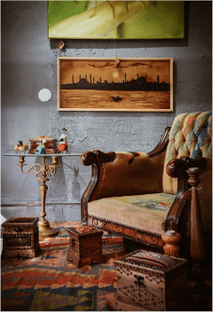

Partie 1 :Votre identitéDans cette section, vous découvrirez ce qui fait de vous une
personne unique. Nous explorerons les grands thèmes de votre
destinée, vos forces et atouts, ce qui vous motive profondément,
ainsi que la manière dont vous abordez la vie. Elle vous permettra
d’affiner votre compréhension de vous-même et de mieux identifier
les leviers pour avancer sereinement.À méditerIl est fréquent de considérer nos qualités comme "normales", de
les envisager comme de simples compétences dont tout le monde
dispose ou devrait disposer. Et c’est souvent par une remarque,
un retour positif d’une personne extérieure que nous prenons un
jour conscience qu’il s’agit en réalité de traits qui nous
distinguent.
Ce mode de fonctionnement présente deux revers importants. Tout
d’abord, cela nous empêche de nous apprécier à notre juste
valeur, de célébrer pleinement qui l’on est. Or c’est bien comme
ça que se construit et s’alimente notre confiance et estime de
nous. De plus, cela crée des attentes envers les autres qui ne
pourront jamais être entièrement comblées : ces qualités qui
nous semblent basiques ne le sont peut-être pas et tout le monde
ne pourra pas les développer.
Certaines personnes ne sont pas faites pour aider leur
entourage, d’autres ne sont pas faites pour être ouvertes
d’esprit et voir les choses sous un angle nouveau, et tout le
monde n’est pas destiné à œuvrer à la construction d’un monde
meilleur. Et c’est tant mieux ! Car ces mêmes personnes ont
d’autres rôles à jouer tout aussi importants : pousser les
autres à sortir de leur zone de confort et leur apprendre à
devenir autonomes, structurer et renforcer l’existant, ou encore
lancer des initiatives personnelles qui finiront tôt ou tard par
profiter au plus grand nombre. Attendre des uns et des autres
qu’ils fonctionnent de la même manière ou se lamenter qu’ils ne
changent pas revient à une seule et unique chose : se construire
une véritable autoroute vers la frustration.
Dans les qualités et caractéristiques que vous allez découvrir
ou redécouvrir dans cette partie, pensez-vous qu’elles se
retrouvent chez tous ? Vous a-t-on déjà fait des retours
positifs que vous avez eu du mal à croire ou que vous avez
trouvé exagérés ? De vos qualités, quelles sont celles que vous
souhaiteriez retrouver chez tout le monde ? Que feriez-vous de
différent si vous aviez la certitude que c’est impossible
?
L'indépendanceLes relations profondesL’affirmation de soiLa persévéranceLa libertéL’équilibreLa quête de sensL'accomplissement personnelL’altruismeLa réalisation de vos aspirationsLa construction collectiveLa déterminationL’écouteLa communicationLa fiabilitéL’ouverture d’espritLe sens des responsabilitésLa réflexionL’impactLa générositéLa sensibilitéLe pragmatismeL'autonomieLa sérénitéL'expression personnelleLa stabilitéLa découverteL’engagementLa connaissanceLa maîtriseLa contributionL’élévationL'impact durableLes points saillants de votre thèmeChercher à résumer votre personnalité, votre parcours ou vos
aspirations en un seul mot est forcément réducteur. Nous sommes
toutes et tous faits de nuances, de contradictions parfois, de
ressources qui coexistent et évoluent au fil du temps. Pour
chaque grande dimension de votre profil numérologique, plusieurs
traits peuvent vous correspondre et se manifester à différents
moments de votre vie.
Cette page met pourtant en lumière, pour chaque catégorie, la
caractéristique qui ressort avec le plus de force dans votre
thème. Non pas pour résumer qui vous êtes, mais pour identifier
l’influence dominante — celle qui semble guider ou structurer le
plus nettement votre manière d’être, d’agir ou de ressentir.
Vous en trouverez la description dans les pages suivantes.Le fil conducteur de votre destinéeVotre atout principalVotre moteur dans la vieCe que vous souhaitez accomplirVivre votre voie personnelleDes collaborations harmonieusesApporter de la légèretéDes réalisations solidesUne vie d'explorationÊtre un soutien pour les autresApporter clarté et discernementConstruire votre propre placeIncarner et porter vos valeursTransmettre et incarner vos idéauxRéaliser des projets d’ampleur
Votre chemin de vie :Un Parcours d’Accomplissement et de ResponsabilitésLes Thèmes de Votre Destinée
Votre chemin de vie vous invitera à explorer vos idéaux tout en
apprenant à les concrétiser. Ce parcours vous pousse à
transformer vos aspirations profondes en réalisations tangibles,
en trouvant un équilibre entre instinct et action. Vous serez
amené à affiner votre perception du monde et à canaliser votre
sensibilité pour en faire une force constructive.
Tout au long de votre vie, vous pourrez ressentir une pression
intérieure sans toujours en comprendre l’origine. C’est parce
que, d’une manière ou d’une autre, vous aurez soit une sensation
d'urgence de vous réaliser, soit parce que vous percevez
inconsciemment l’importance de ce que vous aurez à accomplir.
Cette intensité intérieure peut générer des doutes ou donner
l’impression que vous devez en faire plus, sans jamais atteindre
un idéal suffisamment élevé. Apprendre à canaliser cette
exigence et à la transformer en un moteur positif vous aidera à
avancer avec plus de sérénité. En acceptant que chaque
expérience a sa valeur et qu’aucun parcours n’est linéaire, vous
pourrez donner du sens à votre évolution sans vous laisser
submerger par une quête de perfection.
Vos Potentiels à Développer
Votre chemin de vie est une invitation à développer pleinement
votre potentiel. Il ne s’agit pas seulement d’un parcours à
suivre, mais d’une évolution qui vous amènera à révéler et à
affiner des qualités essentielles. Les expériences, les
rencontres et les défis que vous traverserez seront les moteurs
de cette transformation. Certaines de ces qualités sont
peut-être déjà présentes en vous, tandis que d’autres émergeront
avec le temps, nourries par vos apprentissages. La numérologie
ne précise pas à quel moment elles se manifesteront pleinement,
mais elle met en lumière ce vers quoi vous• Concrétiser des idéaux
• Construction sur des bases solides
• Équilibre entre aspirations personnelles et collectives
• Persévérance et vision à long termeLes Thèmes de votre Destinée • Apaisement et création d’harmonie
• Assumer ses responsabilités sans s’épuiser
• Créativité et sens esthétique
• Apprentissage du lâcher-priseVos potentiels déjà activés ou à développercapacité à captiver et inspirer. Avec le temps, vous apprendrez
à mieux canaliser votre énergie créative pour transmettre des
messages qui résonnent et touchent les autres. Que ce soit à
travers l’art, la parole ou toute autre forme d’expression, vous
développerez votre aptitude à partager votre vision avec clarté
et impact.
Votre confiance dans votre singularité s’affirmera
progressivement. Vous apprendrez à assumer pleinement ce qui
vous rend unique et à exprimer votre personnalité avec
authenticité, sans craindre le regard des autres. En osant vous
affirmer, vous découvrirez que votre singularité peut devenir
une force et un véritable atout dans votre manière de vous
exprimer et d’interagir avec les autres.
Votre capacité à exercer une influence positive se renforcera
au fil du temps. Vous comprendrez que vos mots et vos actions
ont un impact sur votre entourage. En prenant conscience de
cette responsabilité, vous apprendrez à utiliser votre
expression personnelle pour encourager, motiver et insuffler une
dynamique constructive autour de vous.
Enfin, votre capacité à gérer votre créativité avec
organisation s’affirmera avec le temps. Vous apprendrez à
structurer vos projets, à canaliser vos inspirations et à donner
une forme concrète à vos idées. Trouver un équilibre entre
spontanéité et rigueur vous permettra de concrétiser vos
aspirations et de leur donner une portée durable.
Vous accordez une grande importance à la qualité des échanges
et veillez à comprendre pleinement les besoins de votre
entourage. Votre capacité à écouter avec attention et à
percevoir les nuances permet d’instaurer un climat de confiance.
Vous adaptez votre approche en fonction des situations et des
sensibilités, ce qui favorise des interactions harmonieuses. En
faisant preuve d'attention aux besoins des autres, vous créez
des relations solides basées sur la compréhension et le respect
mutuel. Votre sens de l’observation vous permet de repérer ce
qui est important pour chacun et de répondre avec justesse aux
attentes.
Vous faites preuve d’une grande souplesse et savez vous ajuster
aux contextes variés. Votre capacité à prendre en compte les
attentes et à trouver des solutions adaptées permet d’évoluer
avec aisance dans des environnements changeants. Sans chercher à
vous imposer, vous vous intégrez naturellement aux dynamiques en
place et contribuez de manière efficace aux projets collectifs.
Votre aptitude à vous adapter aux circonstances est une force
précieuse dans vos interactions. Vous savez ajuster votre
approche en fonction des situations, en trouvant un équilibre
entre flexibilité et constance.
Vous exprimez vos idées avec tact et prenez soin de favoriser
un dialogue apaisé. Votre approche réfléchie permet d’éviter les
tensions et d’encourager des discussions constructives. Vous
avez le sens de l’équilibre et veillez à concilier les points de
vue sans heurter les sensibilités. Votre manière de désamorcer
les conflits et de créer un climat de coopération aide à
maintenir des échanges fluides et respectueux. Vous prenez le
temps d’analyser chaque situation avant d’intervenir, ce qui
facilite la communication et favorise une entente
mutuelle.La capacité à structurer et concrétiser vos projets avec
persévéranceVos Atouts et Forces :Vos Atouts et Forces• Capacité d’adaptation
• Exploration et progression
• Ouverture aux nouvelles perspectives Ce que vous cherchez à accomplir :Vous cherchez à vous accomplir en construisant quelque chose
qui vous dépasse, en mettant votre énergie au service de projets
durables, collectifs et porteurs de sens. Vous souhaitez faire
exister dans ce monde une forme d’engagement concret, ancré dans
la réalité, mais capable d’avoir un impact profond et
structurant sur votre environnement. Ce que vous cherchez à
incarner vous amène à relier vision et action, à transformer des
idées fortes en réalisations solides, et à contribuer activement
à quelque chose d’utile pour les autres. Vous ne cherchez pas à
diriger pour imposer, mais à fédérer, à organiser, à bâtir sur
le long terme.
Dans votre parcours, cela peut se traduire par une grande
capacité de travail, un sens des responsabilités assumé, et une
aptitude à porter des projets ambitieux sans perdre de vue
l’efficacité concrète. Vous êtes perçue comme déterminée,
stable, capable d’embrasser des enjeux complexes tout en gardant
les pieds sur terre. Vous pouvez être attirée par des situations
où il s’agit de rassembler autour d’une idée, de coordonner des
actions concrètes ou de bâtir quelque chose de structurant et
durable. Cela peut se jouer dans des contextes variés, qu’ils
soient personnels, collectifs ou associatifs, dès lors qu’ils
vous permettent de concrétiser une vision à long terme. Ce que
vous mettez en œuvre s’appuie sur votre capacité à relier
ambition, organisation et engagement au service d’une finalité
qui vous dépasse.
Si cette dynamique devient trop envahissante, vous pourriez
avoir tendance à vous surcharger, à vouloir tout contrôler ou à
vous couper de vos élans plus spontanés. Et si, à l’inverse,
vous ne trouvez pas de projet à la hauteur de votre besoin
d’engagement, vous pourriez ressentir une forme de frustration
ou de vide. L’enjeu est alors de garder le lien entre votre
puissance d’action et votre sensibilité, afin que ce que vous
construisez reste profondément aligné avec ce qui vous importe
vraiment, et non dicté par la seule exigence de résultat.Maintenir la cohésion et apporter sécurité et bien-être autour de
vous• Engagement loyal
• Dimension collective
• Présence attentiveCe que vous cherchez à accomplir ou apporter• Débordement émotionnel
• Doute de votre légitimitéPoints de vigilance
Ce qui vous anime profondément :Votre moteur intérieur repose sur un besoin d’exprimer
librement vos idées, vos émotions et votre vision du monde. Vous
ressentez une impulsion naturelle à partager, que ce soit à
travers la parole, l’écriture, l’art ou toute autre forme de
communication. L’échange et la transmission sont au cœur de
votre dynamique, et vous recherchez des environnements où vous
pouvez interagir et inspirer les autres.
L’enthousiasme et la spontanéité rythment votre parcours. Vous
appréciez la nouveauté, les rencontres enrichissantes et les
expériences qui stimulent votre imagination. Chercher de
nouvelles idées, utiliser votre créativité est une source
d’énergie, et vous avez besoin de pouvoir explorer ou de créer
sans contrainte. L’optimisme et la joie de vivre sont des
moteurs puissants qui vous poussent à rechercher des expériences
qui nourrissent votre esprit et éveillent votre curiosité.
Votre approche est marquée par une forte capacité à captiver et
à dynamiser votre entourage. Vous avez le don de rendre les
échanges vivants et de créer une atmosphère stimulante où chacun
se sent à l’aise. Vous vous épanouissez lorsque vous pouvez
donner du rythme à votre quotidien et évoluer dans un cadre qui
favorise la liberté d’expression et la diversité des
idées.
Cependant, cette spontanéité peut parfois vous amener à vous
disperser ou à rechercher l’approbation des autres pour vous
sentir pleinement accomplie. Vous pourriez avoir du mal à
canaliser votre énergie sur un projet précis et à persévérer
lorsque l’enthousiasme initial s’essouffle. L’un des défis à
surmonter est d’apprendre à structurer vos ambitions pour leur
donner une portée plus durable, sans perdre votre enthousiasme
naturel.Le désir de construire et d’avoir un impact durable• Rechercher une vision plus vaste de la vie
• Vous laisser guider par votre intuition
• Pouvoir partager votre perception profonde et nuancée du
mondeVos besoins profondsVous ouvrir aux autres sans renoncer à votre profondeur
intérieure sans suranalyserDéfi principal